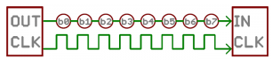
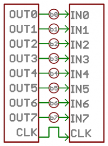
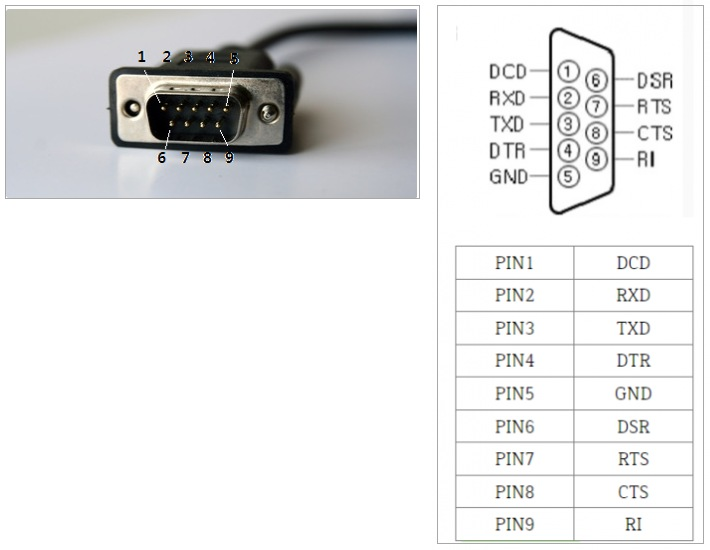
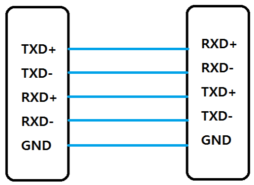

Chapter 0. 시리얼 통신 개요¶
0절. 기본 용어
1절. 직렬(Serial) & 병렬(Parallel)
2절. RS-232
3절. RS-422
4절. RS-485
5절. 정리
6절. 주의사항
0절. 기본 용어¶
| 용어 | 영문 | 설명 |
|---|---|---|
| 보 레이트 | Baud Rate | - bit/sec 단위 - 초당 전송이 가능한 데이터 비트 수 |
| 데이터 비트 | Data Bits | - 통신의 단위 비트 길이 - 일반적으로 8 bits => 확장 아스키 코드 사용 목적 |
| 패리티 비트 | Parity Bits | - 패리티 오류 검출 비트 - 통신 무결성 체크 - 일반적으로 NONE 상태 - 오류 검출 시 수정 기능 X |
| 스탑 비트 | Stop Bits | - 일반적으로 1로 설정 - 다음 시작 비트 전송을 위한 시간 할당 역할 |
| 흐름 제어 | Flow Control | 하드웨어 통신 무결성 보장 |
| 동기화 | Synchronization | 송신 측에서 보낸 데이터를 수신한 쪽에서도 같은 값으로 인식하기 위해 값을 맞추는 것 |
| 동기 통신 | Synchronous Communication | 수신자 & 송신자 간 상호 동기를 맞추고자 클럭 신호를 추가하는 통신 |
| 통신 프로토콜 | Communication Protocol | 서로 다른 기기들 간 데이터 교환을 원활하게 수행하기 위한 표준화 통신 규약 |
1절. 직렬(Serial) & 병렬(Parallel)¶
직렬(Serial) 통신¶
- 한 비트씩 순차적인 전송 통신
- 데이터 일렬 전송 가능
- 느린 전송 속도
- 먼 거리로 전송 가능
- 단순하며 I/O 라인 절약 가능
- 비용 절감

직렬(Serial) 통신 장점¶
- 비교적 적은 전선으로 데이터를 안정적으로 전송
1. 배선이 단순하고 저렴¶
2. 장거리 데이터 전송 가능¶
3. 높은 노이즈 저항성¶
4. 무선 통신 적용 가능¶
병렬(Parallel) 통신¶
- 별도 연결의 동시 전송 통신
- 한 번에 여러 데이터 전송 가능(여러 개의 선로)
- 직렬 통신보다 빠른 속도
- 필수적인 동기화
- 짧은 통신 거리
- 다수의 I/O 라인 소모

병렬 통신의 한계¶
1. 하드웨어 복잡성 증가¶
- 여러 개의 데이터 라인 필요
- 선이 많아지고 회로 복잡성 증가
2. 신호 간섭 문제¶
- 데이터 라인 증가
- 신호 간섭(CrossTalk) 발생 가능성 상승
3. 장거리 전송 부적합¶
- 거리가 길어질수록 신호 약화
- 타이밍 차이(skew) 발생
- 동기화가 어려움
직렬 VS 병렬¶
| 특징 | 직렬(Serial) | 병렬(Parallel) |
|---|---|---|
| 전송 속도 | 느림 | 상대적으로 빠름 |
| 통신 선로 개수 | 1 개 | 여러 개 |
| 클럭 당 전송 비트 수 | 1 bits | 통신 선로 개수 만큼 |
| 비용 | 적음 | 높음 |
| 채널 간 간섭 | X | 존재 |
| 시스템 업그레이드 | 쉬움 | 어려움 |
| 전송 모드 | 전이중 Full-Duplex |
반이중 Half-Duplex |
| 전송 거리 | 먼 거리 | 짧은 거리 |
| 고 주파수 동작 | 상대적으로 효과적 | 덜 효과적 |
2절. RS-232C¶
RS-232C¶
- 표준 인터페이스
- 미국 EIA(전자산업협회, Electronic Industries Alliance)에서 제정
- 직렬 이진 데이터의 교환을 하는 데이터 단말 장치(DTE)와 데이터 통신 장치(DCE) 간 인터페이스 규격
- 1:1 통신
- 전기적 신호 레벨
- 일반적으로 +3V ~ +15V는 논리 0(OFF)
- -3V ~ -15V는 논리 1(ON)
- TTL 통신(0~5V)에 비해 ±10V 정도의 큰 전압 스윙을 사용
- 노이즈에 강함
- 통신 거리
- 15m
- 빠른 속도
- 짧은 거리
- 느린 속도
- 먼 거리
- 좋은 선로 품질
- 더 좋은 먼 거리 통신
- 신호선
- 서로 주고 받는 통신
| 신호선 구성 |
|---|
| 송신(TX) |
| 수신(RX) |
| 공통접지(GND) |
RS-232C 용어 분해¶
- Recommended Standard
- 권장 표준
- 232
- 규격 식별 번호
- C
- 버전
RS-232C 통신¶
- 해당 통신을 위한 3개의 선
- TXD(송신)
- RXD(수신)
- GND(접지)

| PIN # | 방향 | 명칭 | 영문 | 설명 |
|---|---|---|---|---|
| 1 | Input | CD | Carrier Detect | 해당 핀이 논리 0이 되면 해당 장치가 보낸 데이터를 상대 장치가 수신했음을 인지 |
| 2 | Input | RxD | Received Data | 데이터 수신 핀 |
| 3 | Output | TxD | Transmitted Data | - 데이터 전송 핀 - 이 장치가 대기 상태인 경우 논리 1 출력 |
| 4 | Output | DTR | Data Terminal Ready | 해당 핀이 논리 0을 출력하면 상대 장치에게 데이터 송신 준비가 됐음을 알림 |
| 5 | . | GND | Signal Ground | 접지 |
| 6 | Input | DSR | Data Set Ready | 해당 핀이 논리 0이 되면 상대 장치가 데이터를 송신할 준비가 됐음을 인지 |
| 7 | Output | RTS | Request TO Send | 해당 핀에 논리 0을 출력하면 상대방 장치에게 데이터를 수신할 준비가 됐음을 알림 |
| 8 | Input | CTS | Clear TO Send | 해당 핀이 논리 0이 되면 상대 장치가 데이터를 수신할 준비가 됨을 인지 |
| 9 | Input | RI | Ring Indicator | 해당 핀이 논리 0이 되면 모뎀에 통신 연결 요구의 발생을 인지 |
3절. RS-422¶
RS-422¶

- 차동 신호 이용 통신
- 각 신호 종류 당 2개의 신호선을 쓰는 것이 중요
- 차동 신호 : 두 신호 간 차를 이용한 것으로 노이즈에 강함
- ex) 전선 2가닥을 꼬아서 각각 10V, 5V를 준 상태
- 노이즈가 3V라면?
- 13 - 7 = 5V
- 즉, 차잇값이 5V로 동일
- 노이즈에 영향이 적거나 없음
4절. RS-485¶
RS-485¶
- 반 이중 통신 방식
- 송신 및 수신 동시에 불가능
- 2선 결선 방식에 해당
- RS-422의 제한된 디바이스 개수를 확장하고 입력과 출력의 전압 부분이 강화된 통신 방식
- N : N 통신 가능
5절. 정리¶
통신 규격 사양¶
| Specification | RS-232C | RS-422 | RS-485 |
|---|---|---|---|
| 동작 모드 | Single-Ended | Differential | Differential |
| 최대 Driver 수 | 1 Driver | 1 Driver | 32 Drivers |
| 최대 Receiver 수 | 1 Receiver | 10 Receivers | 32 Receivers |
| 최대 통달 거리 | 약 15 m | 약 1.2 km | 약 1.2 km |
| 최고 통신 속도 | 20 kb/s | 10 Mb/s | 10 Mb/s |
| 지원 전송 방식 | Full Duplex | Full Duplex | Half Duplex, Full Duplex |
| 최대 출력 전압 | ±25 V | 2 V ~ 6 V | 1.5 V 이상 |
| 최대 입력 전압 | ±15 V | -7 V ~ +7 V | -7 V ~ +12 V |
6절. 주의사항¶
제어 문자(STX/ETX) 처리¶
- 데이터 변질 문제
- 문자열 인코딩(UTF-8, ASCII 등) 과정에서 특정 바이트 값(특히 0x80 이상)이 '알 수 없는 문자'로 변환될 가능성 존재
- string
- char
| 해결 방안 |
|---|
byte vs char 타입 혼용 금지
제어 문자는 반드시 byte 배열로 처리해야 함. (예: byte[] packet = { 0x02, ... };)
ASCII 인코딩 사용 시 7비트 범위를 벗어나는 데이터가 손실될 위험이 있음.
2. 데이터 파편화(Fragmentation) 및 뭉침(粘包) 현상 (가장 중요)¶
문제점: SerialPort.Read() 이벤트가 발생했을 때, 내가 보낸 패킷(STX ~ ETX)이 한 번에 전부 들어온다는 보장이 없음.
경우 1: STX와 데이터 일부만 먼저 들어오고, 나머지는 다음 이벤트에 들어옴 (파편화).
경우 2: 앞 패킷의 끝부분과 뒤 패킷의 앞부분이 합쳐져서 들어옴 (뭉침).
해결책: 수신 버퍼(Buffer)를 만들어서 데이터를 누적시킨 뒤, STX와 ETX를 찾아 완벽한 하나의 패킷이 되었을 때만 처리(Parsing)해야 함.
- 엔디안(Endianness) 불일치 주의 문제점: PC(C# WinForm)는 리틀 엔디안(Little Endian)을 쓰지만, 일부 PLC나 임베디드 장비(Big Endian)는 바이트 순서가 반대일 수 있음.
해결책: 2바이트 이상의 숫자(int, short 등)를 보낼 때는 상호 간의 엔디안 방식을 확인하고, 필요시 Array.Reverse() 등으로 순서를 맞춰야 함.
- 스레드(Thread) 충돌 및 UI 블로킹 문제점: DataReceived 이벤트는 별도의 스레드에서 발생함. 여기서 수신된 데이터를 텍스트박스 등에 바로 출력하려고 하면 크로스 스레드(Cross-thread) 예외 발생.
해결책: Invoke 또는 BeginInvoke를 사용하여 UI 스레드에서 화면을 갱신해야 함.